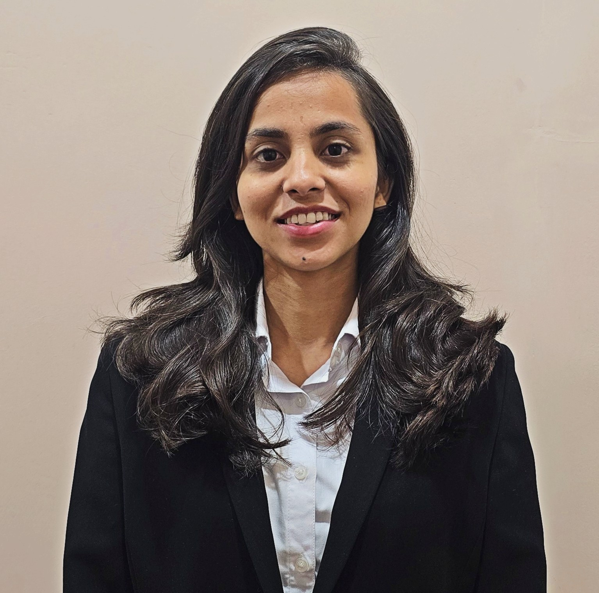

Harshiddhi Pathak
PhD Researcher in Computer Science & Engineering at IIT Gandhinagar, working in Artificial Intelligence.
My research focuses on Brain-Computer Interfaces, multimodal neuroimaging, and deep learning for early detection of neurodegenerative disorders.

Research
My research lies at the intersection of artificial intelligence, neuroscience, and biomedical engineering. I develop deep learning models for Brain-Computer Interfaces and multimodal neuroimaging, combining EEG, MRI, and fMRI to understand and classify neurodegenerative disorders such as Alzheimer's disease and dementia.
Brain–computer interfaces
EEG signal acquisition and decoding for neurodegenerative disorder classification and early diagnosis.
Multimodal medical imaging
Cross-attention fusion of MRI and fMRI for early Alzheimer's disease detection.
Deep learning for neuroscience
Graph Attention Networks over Synchrosqueezed Chirplet Transform (SCT)–derived EEG features.
Biomedical signal processing
Sensor-based physiological monitoring and instrumentation for clinical and diagnostic use.
Education
present
Doctor of Philosophy (PhD)
Supervisor: Dr. Yogesh Kumar Meena. Coursework: Deep Learning, Human Computer Interaction, Natural Language Processing.
2026
Master of Technology (M.Tech) · CGPA 9.09/10
Thesis: "Cross-Attention Based Fusion of MRI and fMRI for Early Alzheimer's Disease Detection," advised by Prof. Manjunatha Mahadevappa and Dr. Mrinal Acharya.
2024
B.E., Biomedical Engineering · CGPA 8.91/10
Focus: biomedical signals, medical imaging, biomedical instrumentation.
Projects
Cross-attention fusion of MRI and fMRI for early Alzheimer's detection
End-to-end FSL preprocessing pipeline (BET, registration, VBM) extracting ROI-level gray-matter and functional-connectivity features, fused via self- and cross-attention in PyTorch.
Graph Attention Networks with SCT-derived EEG features
A GAT-based framework modeling spatio-temporal dependencies in EEG for Alzheimer's and dementia classification, using Synchrosqueezed Chirplet Transform features.
Bone segmentation from X-ray images
Benchmarked Watershed, Superpixel, and U-Net architectures on the MURA dataset.
EMG measurement device using pressure sensors
Designed and validated a flex-sensor-based EMG measurement device for diabetic neuropathy monitoring.
Publications
H. Pathak et al., "An Attention-Based Framework for Alzheimer's Disease Classification Using Resting-State fMRI."
"Graph Attention Networks with SCT-Derived EEG Features for Alzheimer's and Dementia Classification."
"Cross-Attention Based Fusion of MRI and fMRI for Early Alzheimer's Disease Detection."
Experience
Teaching Assistant, Machine Learning
Teaching Assistant, Biomedical Instrumentation Lab
Assisted with course delivery, lab supervision, assignment design, and evaluation.
Research Intern, Neuromorphic Research Team
Worked with Spiking Neural Networks and advanced attention mechanisms within complex research codebases.
More
- IEEE-EMBS BHI '25, Atlanta — Data competition on predicting meal carbohydrate caloric ratio from 3-hour PPGR. Team "EDAers," global finalist (top 4).
- RadMed Conference 2025, IIT Kharagpur — Poster: "EEG-Based Seizure Detection Using Chirplet Transform and Graph Attention Neural Networks."
- Machine Learning for Engineering and Science Applications — NPTEL, Jan–Apr 2025
- Machine Learning — IIT Roorkee (online certification)